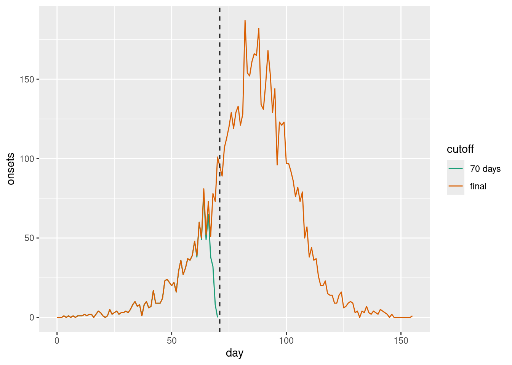
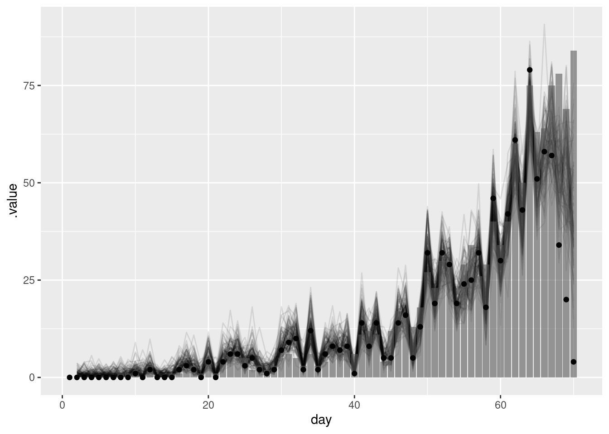
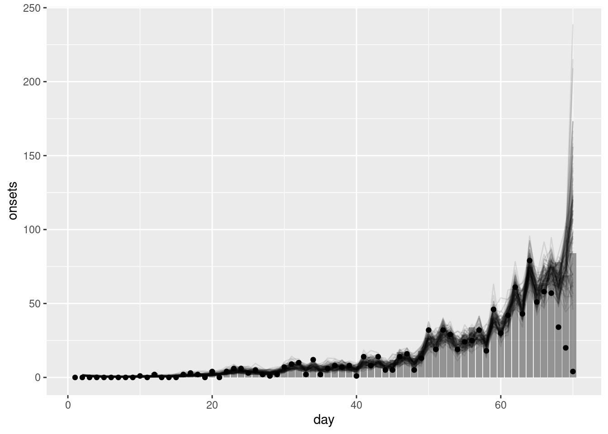
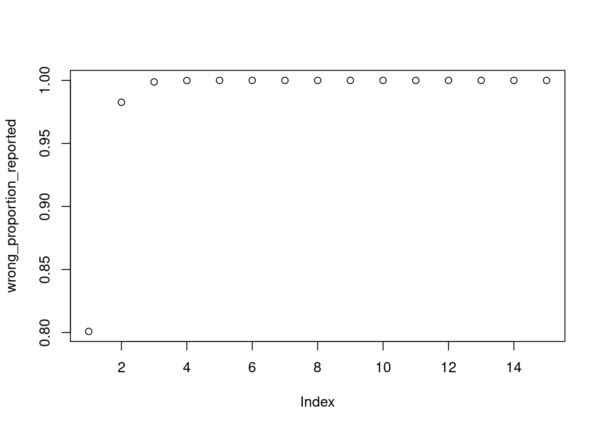
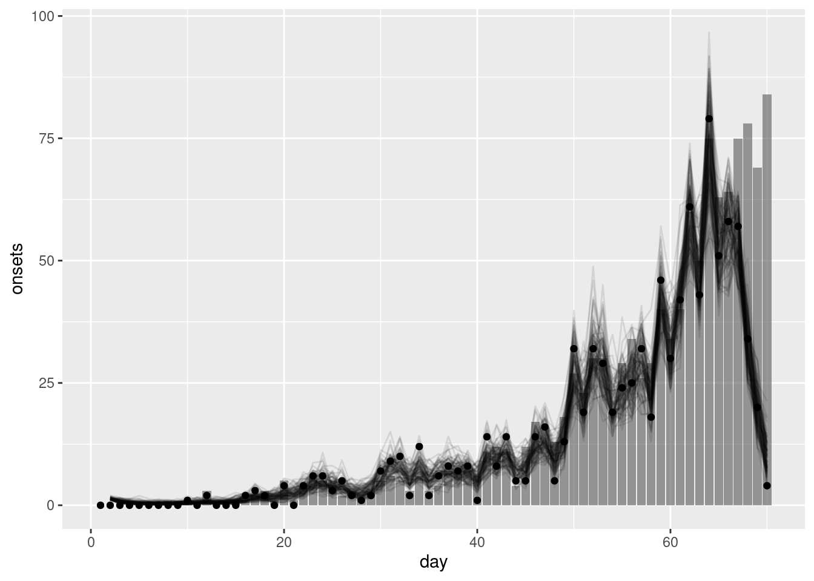

library("nfidd")Warning: replacing previous import 'bayesplot::rhat' by 'posterior::rhat' when
loading 'nfidd'library("dplyr")
library("tidyr")
library("ggplot2")
library("here")
library("cmdstanr")
library("tidybayes")So far we’ve explored the delays and biases of real-time outbreak data, started to correct for these, and considered the underlying process that drives the evolution of an outbreak (looking at the reproduction number and renewal equation). Next, we’ll focus on predicting new information about how an outbreak is evolving in the present and future.
We know that we have incomplete information in the present because of delays in the observation process (reporting delays). The aim of nowcasting is to predict what an epidemiological time series will look like after all delayed reports are in, for which we need to account for the delays and biases we’ve already considered.
This session aims to introduce the concept of nowcasting, and see how we can perform a nowcast if we know the underlying delay distribution.
The source file of this session is located at sessions/nowcasting.qmd.
In this session we will use the nfidd package to load the data set of infection times, the dplyr and tidyr packages for data wrangling, ggplot2 library for plotting, the here library to find the stan model, and the cmdstanr library for using stan. We will also use the tidybayes package for extracting results of the inference.
library("nfidd")Warning: replacing previous import 'bayesplot::rhat' by 'posterior::rhat' when
loading 'nfidd'library("dplyr")
library("tidyr")
library("ggplot2")
library("here")
library("cmdstanr")
library("tidybayes")The best way to interact with the material is via the Visual Editor of RStudio. If not using the Visual Editor please remember that the code in the session needs to be run inside the course repository so that the here() commands below find the stan model files.
We set a random seed for reproducibility. Setting this ensures that you should get exactly the same results on your computer as we do. We also set an option that makes cmdstanr show line numbers when printing model code. This is not strictly necessary but will help us talk about the models.
set.seed(123)
options(cmdstanr_print_line_numbers = TRUE)Epidemiological data is not usually available immediately for analysis. Instead, data usually gets collated at different levels of a healthcare or health surveillance system, cleaned, checked before being aggregated and/or anonymised and ultimately shared with an analyst. We call the reporting time the time a data point (e.g. a time or day of symptom onset or a time or day of hospitalisation) has entered the data set used for some analysis. Similar to the data discussed in the preceding session, this time is often only available as a date, i.e. censored at the scale of a day.
We can simulate this reporting process. Let us assume that the symptom onsets are reported with a delay and that this delay is characterised by a lognormal distribution with meanlog 1 and sdlog 0.5: To do so, we perform a very similar simulation to what we did in the session on delay distributions, except now we don’t simulate hospitalisations but reports of symptom onsets:
data(infection_times)
df <- infection_times |>
mutate(
onset_time = infection_time + rgamma(n(), shape = 5, rate = 1),
report_time = onset_time + rlnorm(n(), meanlog = 1, sdlog = 0.5)
)We then assume that we’re 70 days into the outbreak, i.e. we only consider observations with a reporting time less than 71 - other symptom onset may have already happened, but we have not observed them yet.
cutoff <- 71
df_co <- df |>
filter(report_time < cutoff)
df_on <- df |>
filter(onset_time < cutoff)We can now convert this to a time series of symptom onsets and reports:
## create time series of onsets and reports
df_co <- df_co |>
transmute(
infecton_day = floor(infection_time),
onset_day = floor(onset_time),
report_day = floor(report_time)
)
infection_ts <- df_co |>
count(day = infecton_day, name = "infections")
onset_ts <- df_co |>
count(day = onset_day, name = "onsets")
reports_ts <- df_co |>
count(day = report_day, name = "reports")
all_days <- expand_grid(day = seq(0, cutoff - 1)) |>
full_join(infection_ts, by = "day") |>
full_join(onset_ts, by = "day") |>
full_join(reports_ts, by = "day") |>
replace_na(list(onsets = 0, reports = 0))Plotting these, we get
combined <- all_days |>
pivot_longer(c(onsets, reports, infections), names_to = "variable")
ggplot(combined, aes(x = day, y = value)) +
facet_grid(variable ~ .) +
geom_col()Warning: Removed 7 rows containing missing values or values outside the scale range
(`geom_col()`).
Looking at the four plots in isolation we would conclude very different things about the epidemic: symptom onsets seem to have flattened off and perhaps are going down, whereas reports are increasing rapidly.
This apparent contradiction appears because onsets are reported with a delay. By cutting off at a certain reporting date, we will many of the recent symptom onsets still to be reported. We can see that if we plot the final data set alongside the cut-off one:
final <- df |>
transmute(onset_day = floor(onset_time))
final_onset_ts <- final |>
count(day = onset_day, name = "onsets")
final_all_days <- expand_grid(day = seq(0, max(final_onset_ts$day))) |>
full_join(final_onset_ts, by = "day") |>
replace_na(list(onsets = 0)) |>
mutate(cutoff = "final")
intermediate <- combined |>
filter(variable == "onsets") |>
select(-variable) |>
rename(onsets = value) |>
mutate(cutoff = "70 days")
combined_cutoffs <- rbind(
intermediate,
final_all_days
)
ggplot(combined_cutoffs, aes(x = day, y = onsets, colour = cutoff)) +
geom_line() +
scale_colour_brewer(palette = "Dark2") +
geom_vline(xintercept = cutoff, linetype = "dashed")
As we can see, even though it may much seem like the epidemic curve is going down, in fact in the final data set one can see that at the time symptom onsets were still increasing. The apparent decline towards the present (indicated by a dashed vertical line) was caused by the delay in reporting.
Why then, you might ask, not just plot the data by date of reporting which correctly showed the data to be still increasing and should, by definition, not be subject to future changes? This can sometimes be a sensible way to visualise the data. However, reporting might itself be subject to biases such as breaks during the weekend, holidays etc. At the same time, when it comes to capacity or intervention planning we may need to know how many people e.g. become sick on any given day and will thus present to the healthcare system rather than how many will be reported. Estimating the “true curve” (i.e. what we expect to see once the data are complete at a future date) of the time series of epidemiologically relevant events from a potentially truncated epidemiological curve and information about the delays is what is usually called “nowcasting”.
Here we assume that the delay distribution is known and that we can use it to nowcast the most recent data. In practice, the delay distribution is often not known and needs to be estimated from the data. We could do this using methods from the session on biases in delay distributions.
In the session on convolutions we used delay distributions convolved with the infection times to estimate the time series of symptom onsets. A simple way to nowcast is to use the same approach but using the cumulative distribution function of the delay distribution rather than the probability density function and only apply it to the most recent data as this is the only data that can be subject to change (due to delays in reporting). We will build intuition for this as usual using simulation. First we define the proportion reported using a delay distribution, again using a lognormal distribution with meanlog 1 and sdlog 0.5:
proportion_reported <- plnorm(1:15, 1, 0.5)
plot(proportion_reported)
The plnorm() function is related to the rlnorm() function we used earlier to simulate the individual level reporting delay, but instead it gives the cumulative distribution function rather than random samples. That is, it gives us the probability that a report is made on day 1 or earlier, day 2 or earlier, etc.
We can now construct some simulated data and use this delay distribution to nowcast the most recent data. Here we use the same simulation approach as in the renewal session and apply the reporting_delay to the last 15 days of data.
source(here("snippets", "simulate-onsets.r"))
reported_onset_df <- onset_df |>
filter(day < cutoff) |>
mutate(proportion_reported = c(rep(1, n() - 15), rev(proportion_reported)),
reported_onsets = rpois(n(), onsets * proportion_reported)
)
tail(reported_onset_df)# A tibble: 6 × 5
day onsets infections proportion_reported reported_onsets
<dbl> <int> <int> <dbl> <int>
1 65 63 83 0.943 51
2 66 64 75 0.889 58
3 67 75 92 0.780 57
4 68 78 113 0.578 34
5 69 69 120 0.270 20
6 70 84 115 0.0228 4Spend a few minutes trying to understand the code above. What is the proportion_reported? What is the reported_onsets?
proportion_reported is the cumulative distribution function of the delay distribution. It gives the probability that a report is made on day 1 or earlier, day 2 or earlier, etc. Note that for days more that 15 days into the pastreported_onsets are the number of onsets that are reported on each day. This is calculated by multiplying the number of onsets by the proportion of onsets that are reported on each day. It has Poisson noise added to it to simulate the stochasticity in the reporting process.We can now fit our first nowcasting model. Here we assume exactly the same generative process as we used for simulation and model the number of onsets as independent draws from a normal distribution.
mod <- cmdstan_model(here("stan", "simple-nowcast.stan"))
mod 1: functions {
2: #include "functions/condition_onsets_by_report.stan"
3: }
4:
5: data {
6: int n; // number of days
7: array[n] int obs; // observed symptom onsets
8: int report_max; // max reporting delay
9: array[report_max + 1] real report_cdf;
10: }
11:
12: parameters {
13: array[n] real<lower = 0> onsets;
14: }
15:
16: transformed parameters {
17: array[n] real reported_onsets = condition_onsets_by_report(onsets, report_cdf);
18: }
19:
20: model {
21: onsets ~ normal(5, 20) T[0,];
22: // Likelihood
23: obs ~ poisson(reported_onsets);
24: }Familiarise yourself with the model above. What does it do?
condition_onsets_by_report.stan which takes the number of onsets and reports and the delay distribution as input and returns the nowcasted number of onsets.Once again we can generate estimates from this model:
data <- list(
n = nrow(reported_onset_df) - 1,
obs = reported_onset_df$reported_onsets[-1],
report_max = length(proportion_reported) - 1,
report_cdf = proportion_reported
)
simple_nowcast_fit <- mod$sample(data = data, parallel_chains = 4)simple_nowcast_fit variable mean median sd mad q5 q95 rhat ess_bulk ess_tail
lp__ 2334.35 2334.71 6.19 6.11 2323.36 2343.72 1.00 1572 2507
onsets[1] 0.99 0.69 1.00 0.71 0.05 3.06 1.00 5796 2256
onsets[2] 1.01 0.71 0.99 0.72 0.05 3.02 1.00 5775 2551
onsets[3] 1.03 0.68 1.08 0.72 0.05 3.05 1.00 5721 2292
onsets[4] 0.99 0.70 1.00 0.70 0.05 2.98 1.00 5078 2368
onsets[5] 0.99 0.70 0.96 0.71 0.06 2.87 1.00 5456 2397
onsets[6] 1.00 0.72 1.00 0.70 0.05 2.98 1.00 5677 2794
onsets[7] 1.00 0.68 0.99 0.69 0.06 3.03 1.00 6219 2554
onsets[8] 1.02 0.71 1.03 0.71 0.05 3.08 1.00 6398 2110
onsets[9] 1.97 1.67 1.37 1.20 0.35 4.69 1.00 6745 2970
# showing 10 of 139 rows (change via 'max_rows' argument or 'cmdstanr_max_rows' option)We can now plot onsets alongside those nowcasted by the model:
nowcast_onsets <- simple_nowcast_fit |>
gather_draws(onsets[day]) |>
ungroup() |>
filter(.draw %in% sample(.draw, 100)) |>
mutate(day = day + 1)ggplot(nowcast_onsets, aes(x = day)) +
geom_line(mapping = aes(y = .value, group = .draw), alpha = 0.1) +
geom_col(data = reported_onset_df, mapping = aes(y = onsets), alpha = 0.6) +
geom_point(data = reported_onset_df, mapping = aes(y = reported_onsets))
The points in this plot represent the data available when the nowcast was made (and so are truncated) whilst the bars represent the finally reported data (a perfect nowcast would exactly reproduce these).
As we found in the using delay distributions to model the data generating process of an epidemic session, this simple model struggles to recreate the true number of onsets. This is because it does not capture the generative process of the data (i.e. the transmission process and delays from infection to onset). In the next section we will see how we can use a model that does capture this generative process to improve our nowcasts.
As we saw in the session on the renewal equation, a geometric random walk is a simple way to model multiplicative growth. Adding this into our simple nowcasting model may help us to better capture the generative process of the data and so produce a better nowcast.
We first load the model
rw_mod <- cmdstan_model(here("stan", "simple-nowcast-rw.stan"))
rw_mod 1: functions {
2: #include "functions/geometric_random_walk.stan"
3: #include "functions/condition_onsets_by_report.stan"
4: }
5:
6: data {
7: int n; // number of days
8: array[n] int obs; // observed symptom onsets
9: int report_max; // max reporting delay
10: array[report_max + 1] real report_cdf;
11: }
12:
13: parameters {
14: real<lower=0> init_onsets;
15: array[n-1] real rw_noise;
16: real<lower=0> rw_sd;
17: }
18:
19: transformed parameters {
20: array[n] real onsets = geometric_random_walk(init_onsets, rw_noise, rw_sd);
21: array[n] real reported_onsets = condition_onsets_by_report(onsets, report_cdf);
22: }
23:
24: model {
25: init_onsets ~ lognormal(0, 1) T[0,];
26: rw_noise ~ std_normal();
27: rw_sd ~ normal(0, 5) T[0,];
28: //Likelihood
29: obs ~ poisson(reported_onsets);
30: }and then fit it
rw_nowcast_fit <- rw_mod$sample(data = data, parallel_chains = 4)rw_nowcast_fit variable mean median sd mad q5 q95 rhat ess_bulk ess_tail
lp__ 2177.13 2177.50 8.77 8.58 2162.03 2191.03 1.00 836 1408
init_onsets 0.29 0.25 0.17 0.15 0.09 0.62 1.00 4994 3271
rw_noise[1] -1.18 -1.18 0.83 0.83 -2.56 0.19 1.00 4120 3116
rw_noise[2] -0.82 -0.82 0.91 0.92 -2.32 0.66 1.00 4835 2973
rw_noise[3] -0.55 -0.54 0.90 0.86 -2.03 0.95 1.00 5052 3111
rw_noise[4] -0.34 -0.33 0.93 0.93 -1.87 1.18 1.00 5113 3224
rw_noise[5] -0.18 -0.18 0.95 0.93 -1.74 1.39 1.00 4562 2915
rw_noise[6] -0.01 -0.03 0.93 0.93 -1.53 1.55 1.00 4625 2931
rw_noise[7] 0.18 0.16 0.95 0.97 -1.35 1.70 1.00 5887 3063
rw_noise[8] 0.36 0.37 0.90 0.88 -1.14 1.82 1.00 4985 3298
# showing 10 of 209 rows (change via 'max_rows' argument or 'cmdstanr_max_rows' option)Again we can extract the nowcasted onsets and plot them alongside the observed data:
rw_nowcast_onsets <- rw_nowcast_fit |>
gather_draws(onsets[day]) |>
ungroup() |>
filter(.draw %in% sample(.draw, 100)) |> ## sample 100 iterations randomly
mutate(day = day + 1)ggplot(rw_nowcast_onsets, aes(x = day)) +
geom_col(data = reported_onset_df, mapping = aes(y = onsets), alpha = 0.6) +
geom_line(mapping = aes(y = .value, group = .draw), alpha = 0.1) +
geom_point(data = reported_onset_df, mapping = aes(y = reported_onsets))
What do you think of the nowcast now? Does it look better than the previous one?
In practice, we often do not know the delay distribution and so need to estimate it using the data at hand. In the session on biases in delay distributions we saw how we could do this using individual-level records. We will now look at what happens if we get the delay distribution wrong.
We use the same data as before but now assume that the delay distribution is a gamma distribution with shape 2 and rate 3. This is a very different distribution to the lognormal distribution we used to simulate the data.
wrong_proportion_reported <- pgamma(1:15, 2, 3)
plot(wrong_proportion_reported)
We first need to update the data to use this new delay distribution:
wrong_delay_data <- data
wrong_delay_data$report_cdf <- wrong_proportion_reportedWe now fit the nowcasting model with the wrong delay distribution:
gamma_nowcast_fit <- rw_mod$sample(data = wrong_delay_data, parallel_chains = 4)gamma_nowcast_fit variable mean median sd mad q5 q95 rhat ess_bulk ess_tail
lp__ 2180.83 2181.24 8.70 8.61 2165.76 2194.57 1.00 782 1805
init_onsets 0.30 0.27 0.18 0.16 0.08 0.65 1.00 3902 2665
rw_noise[1] -1.20 -1.20 0.86 0.83 -2.61 0.22 1.00 4991 2817
rw_noise[2] -0.81 -0.80 0.90 0.88 -2.33 0.68 1.00 5342 2885
rw_noise[3] -0.55 -0.53 0.90 0.92 -2.07 0.90 1.00 5430 3050
rw_noise[4] -0.34 -0.33 0.93 0.96 -1.86 1.15 1.00 5523 3216
rw_noise[5] -0.15 -0.14 0.91 0.92 -1.66 1.36 1.00 4868 3107
rw_noise[6] 0.04 0.03 0.91 0.93 -1.44 1.54 1.00 4668 2834
rw_noise[7] 0.21 0.21 0.92 0.91 -1.31 1.74 1.00 5434 3032
rw_noise[8] 0.45 0.44 0.93 0.90 -1.07 2.00 1.00 5034 2746
# showing 10 of 209 rows (change via 'max_rows' argument or 'cmdstanr_max_rows' option)Again we can extract the nowcast of symptom onsets and plot it alongside the observed data:
gamma_nowcast_onsets <- gamma_nowcast_fit |>
gather_draws(onsets[day]) |>
ungroup() |>
filter(.draw %in% sample(.draw, 100)) |>
mutate(day = day + 1)ggplot(gamma_nowcast_onsets, aes(x = day)) +
geom_col(data = reported_onset_df, mapping = aes(y = onsets), alpha = 0.6) +
geom_line(mapping = aes(y = .value, group = .draw), alpha = 0.1) +
geom_point(data = reported_onset_df, mapping = aes(y = reported_onsets))
What do you think of the nowcast now? How would you know you had the wrong delay if you didn’t have the true delay distribution?